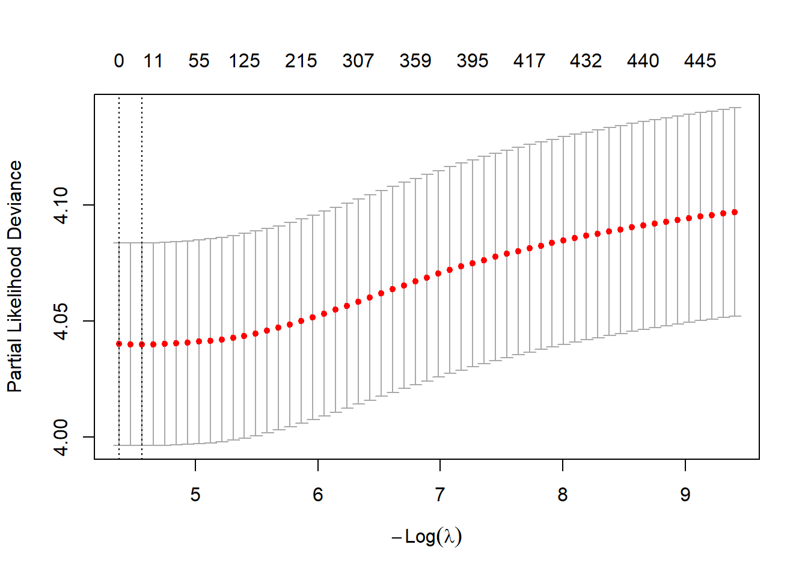
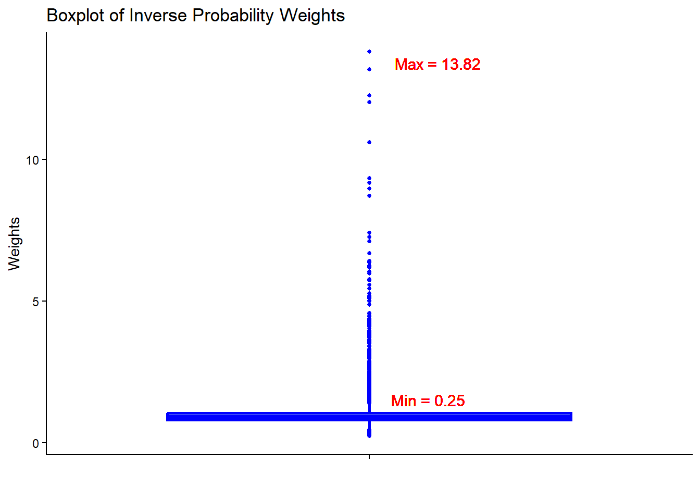
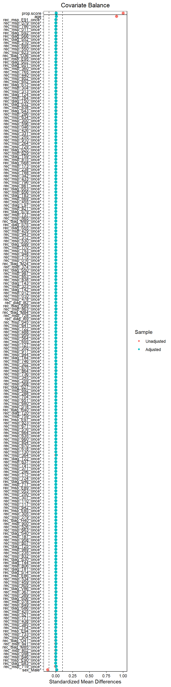

25 Time-dependent exposure
25.1 Time-dependent Cox regression
Let us start with an example of exploring the relationship between disease-modifying drugs (DMDs) for multiple sclerosis and long-term mortality. The DMD exposure is a time-dependent variable, and the mortality outcome is a time-to-event outcome. Employing Cox proportional hazards models with time-varying exposure to DMDs can address immortal time bias in this example.
Time-dependent exposure
- Time-dependent Cox regression with time-varying exposure can help mitigate immortal time bias.
- The hdPS approach is used to deal with residual confounding with a binary ‘time-fixed’ treatment
- With a ‘time-dependent’ exposure, implementing the hdPS in conjunction with the time-dependent Cox regression presents a methodological and practical challenge.
See the associated article for more details (Hossain et al. 2025).
25.2 Nested case-control (NCC)
The nested case-control (NCC) design is a well-established method for addressing immortal time bias with a time-dependent exposure. The NCC framework provides a robust alternative for addressing immortal time bias, while allowing for the integration of hdPS analysis to minimize the residual confounding bias.
NCC
- Match subjects who experienced the event of interest (called cases) to a subset of event-free subjects (called controls) using incidence density sampling
- Some controls could later become cases themselves and also serve as controls for other cases
- Four controls per case has been shown to provide near-optimal statistical efficiency without the need for the full cohort analysis
25.3 hdPS in the NCC framework
The time-dependent exposure status becomes a time-independent exposure variable in the NCC analysis. Hence, we could implement the hdPS technique in the NCC framework to deal with residual confounding bias.
25.3.1 Step 0: Analytic data
To demonstrate the use of hdPS analysis with a time-dependent exposure, we will use a simulated dataset. This example explores the relationship between exposure to disease-modifying drugs (DMDs) for multiple sclerosis and all-cause mortality.
25.3.1.1 Dataset with time-dependent exposure
head(simdat)25.3.1.2 NCC with 4 control per case
Let us use the nested case-control (NCC) design with 4 controls per case. The ccwc function from the Epi package is used to create the nested case-control dataset. The ccwc function requires the following arguments:
origin: The time origin for the studyentry: The time of entry into the studyexit: The follow-up timefail: The event of interestcontrols: The number of controls per casematch: The variables to match on
library(Epi)
set.seed(100)
dat.ncc <- ccwc(
origin = 0,
entry = 0,
exit = follow_up,
fail = mortality_outcome,
controls = 4,
match = list(ses, cci, year),
include = list(id, follow_up, mortality_outcome, anyDMD, yrs_anyDMD,
sex, age),
data = simdat,
silent = T
)
# Drop those experienced the event before being exposed
dat.ncc$anyDMD[dat.ncc$yrs_anyDMD > dat.ncc$Time] <- NA
dat.ncc <- dat.ncc[complete.cases(dat.ncc$anyDMD),]
dat.ncc[1:10,]# Rows
dim(simdat)
#> [1] 19000 10
dim(dat.ncc)
#> [1] 14370 14
# Mortality status
table(simdat$mortality_outcome)
#>
#> 0 1
#> 15947 3053
table(dat.ncc$Fail)
#>
#> 0 1
#> 11317 305325.3.2 Step 1: Proxy sources
In this example, we will use four data dimensions:
- 3-digit diagnostic codes from hospital database (diag)
- 3-digit procedure codes from hospital database (proc)
- 3-digit icd codes from physician claim database (msp)
- DINPIN from drug dispensation database (din)
table(dat.proxy$dim)
#>
#> diag din msp proc
#> 10000 125 22135 15825.3.3 Step 2: Empirical covariates
library(autoCovariateSelection)
id <- simdat$id
step1 <- get_candidate_covariates(df = dat.proxy, domainVarname = "dim",
eventCodeVarname = "code",
patientIdVarname = "id",
patientIdVector = id,
n = 1000,
min_num_patients = 20)
out1 <- step1$covars_data
head(out1)25.3.4 Step 3: Recurrence
Let us generate the binary recurrence covariates.
all.equal(id, step1$patientIds)
#> [1] TRUE
# Assessing recurrence of codes
step2 <- get_recurrence_covariates(df = out1,
eventCodeVarname = "code",
patientIdVarname = "id",
patientIdVector = id)
out2 <- step2$recurrence_data
dim(out2)
#> [1] 19000 454# Recurrence covariates
vars.empirical <- names(out2)[-1]
head(vars.empirical)
#> [1] "rec_diag_H02_once" "rec_diag_H18_once" "rec_diag_H35_once"
#> [4] "rec_diag_H40_once" "rec_diag_H44_once" "rec_diag_I69_once"25.3.4.1 Merging all recurrence covariates with the analytic dataset
hdps.data <- merge(dat.ncc, out2, by = "id", all.x = T)
dim(hdps.data)
#> [1] 14370 46725.3.5 Step 4: Prioritize
We will use Cox-PH with LASSO regularization to prioritize the empirical covariates. The hyperparameter (\(\lambda\)) will be selected using 5-fold cross-validation.
25.3.5.1 Hyperparameter tuning
# Formula with only empirical covariates
formula.out <- as.formula(paste("Surv(Time, Fail) ~ ",
paste(vars.empirical, collapse = " + ")))
# Model matrix for fitting Cox with LASSO regularization
X <- model.matrix(formula.out, data = hdps.data)[,-1]
Y <- as.matrix(data.frame(time = hdps.data$Time, status = hdps.data$Fail))
# Detect the number of cores
n_cores <- parallel::detectCores()
# Create a cluster of cores
cl <- makeCluster(n_cores - 1)
# Register the cluster for parallel processing
registerDoParallel(cl)
# Hyperparameter tuning with 5-fold cross-validation
set.seed(123)
fit.lasso <- cv.glmnet(x = X, y = Y, nfolds = 5, parallel = T, alpha = 1,
family = "cox")
stopCluster(cl)
plot(fit.lasso)
## Best lambda
fit.lasso$lambda.min
#> [1] 0.0104234525.3.5.2 Variable ranking based on Cox-LASSO
empvars.lasso <- coef(fit.lasso, s = fit.lasso$lambda.min)
empvars.lasso <- data.frame(as.matrix(empvars.lasso))
empvars.lasso <- data.frame(vars = rownames(empvars.lasso),
coef = empvars.lasso)
colnames(empvars.lasso) <- c("vars", "coef")
rownames(empvars.lasso) <- NULL
# Number of non-zero coefficients
table(empvars.lasso$coef != 0)
#>
#> FALSE TRUE
#> 442 11Since proxies were random and unrelated to the simulated data, LASSO produced only 11 non-zero coefficients. Let choose an arbitrary value as to demonstrate the process of variable selection.
empvars.lasso <- coef(fit.lasso, s = exp(-6))
empvars.lasso <- data.frame(as.matrix(empvars.lasso))
empvars.lasso <- data.frame(vars = rownames(empvars.lasso),
coef = empvars.lasso)
colnames(empvars.lasso) <- c("vars", "coef")
rownames(empvars.lasso) <- NULL
head(empvars.lasso)
# Number of non-zero coefficients
table(empvars.lasso$coef != 0)
#>
#> FALSE TRUE
#> 196 25725.3.5.3 Rank empirical covariates
Now we will rank the empirical covariates based on absolute value of log hazard ratio.
empvars.lasso$coef.abs <- abs(empvars.lasso$coef)
empvars.lasso <- empvars.lasso[order(empvars.lasso$coef.abs, decreasing = T),]
head(empvars.lasso)25.3.6 Step 5: Covariates
We used all investigator-specified covariates and the top 200 empirical covariates for the PS model. Again, this is a simplistic scenario where we only consider the main effects of the covariates.
# Investigator-specified covariates
investigator.vars <- c("sex", "age")
# Top 200 empirical covariates section based on Cox-LASSO
empirical.vars.lasso <- empvars.lasso$vars[1:200]
# Investigator-specified and empirical covariates
vars.hsps <- c(investigator.vars, empirical.vars.lasso)
head(vars.hsps)
#> [1] "sex" "age" "rec_diag_T44_once"
#> [4] "rec_diag_O41_once" "rec_msp_793_once" "rec_msp_459_once"25.3.7 Step 6: Propensity score
25.3.7.1 Create propensity score formula
ps.formula <- as.formula(paste0("I(anyDMD == 'Yes') ~ ",
paste(vars.hsps, collapse = "+")))25.3.7.2 Fit PS model
require(WeightIt)
W.out <- weightit(ps.formula,
data = hdps.data,
estimand = "ATE",
method = "ps",
stabilize = T)25.3.7.3 Obtain PS
hdps.data$ps <- W.out$ps25.3.7.4 Obtain weights
hdps.data$w <- W.out$weights
25.3.7.5 Assessing balance

library(survey)
# Balance checking for investigator-specified covariates
design.ipw <- svydesign(ids = ~id, weights = ~w, data = hdps.data)
tab.ipw <- svyCreateTableOne(vars = investigator.vars,
strata = "anyDMD",
data = design.ipw,
test = F)
print(tab.ipw, smd = T) # Age and sex are balanced
#> Stratified by anyDMD
#> No Yes SMD
#> n 11035.4 3324.4
#> sex = Male (%) 3199.3 (29.0) 1007.3 (30.3) 0.029
#> age (mean (SD)) 45.58 (13.75) 45.67 (13.48) 0.00725.3.8 Step 7: Association
25.3.8.1 Obtain HR
We can fit the Cox-PH model, adjusting for the matched strata.
library(survival)
library(Publish)
fit.hdps <- coxph(Surv(Time, Fail) ~ anyDMD + strata(Set),
weights = w,
data = hdps.data)
publish(fit.hdps, pvalue.method = "robust", confint.method = "robust",
print = F)$regressionTable[1:2,]25.3.8.2 Obtain HR with conditional logistic
For the NCC analysis, an alternative to the stratified Cox-PH model is to use the conditional logistic regression. The HR and SE from both models should be similar under the proportional hazards assumption.
fit.hdps1 <- clogit(Fail ~ anyDMD + strata(Set),
weights = w,
data = hdps.data,
method = "efron")
publish(fit.hdps1, pvalue.method = "robust", confint.method = "robust",
print = F)$regressionTable[1:2,]